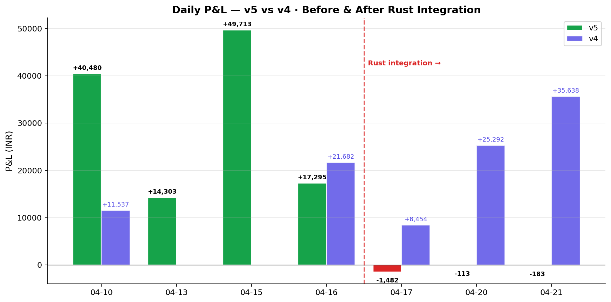
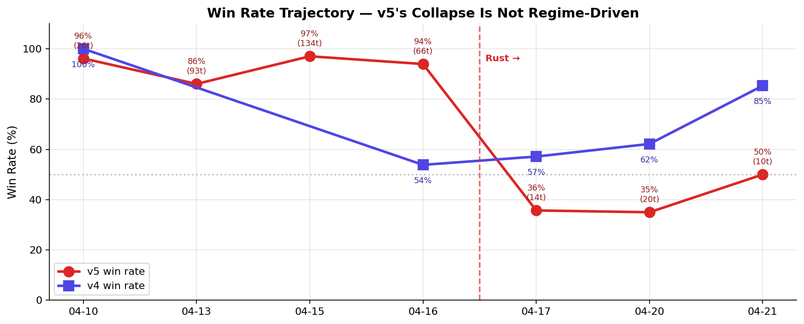
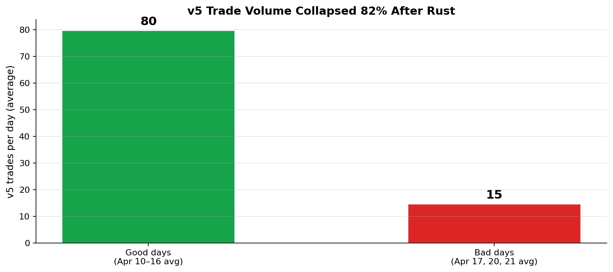
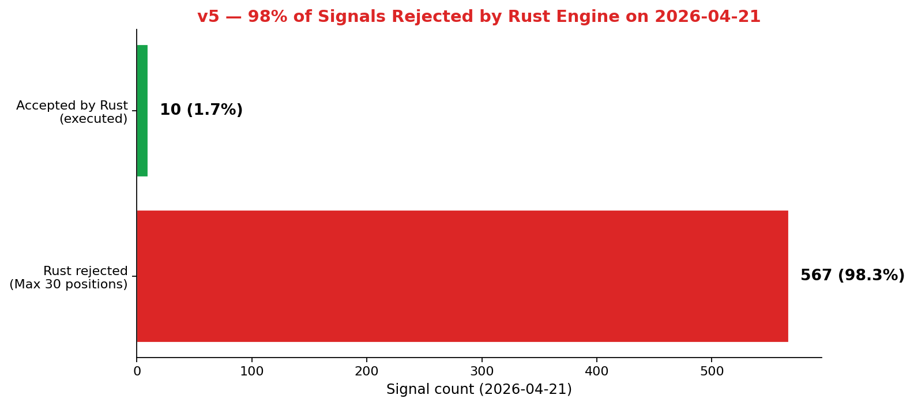

v5 is not failing because of the market, the model, or strategy — it's failing because the Rust risk manager committed at 9d7db34 (Apr 16 02:35 AM) caps v5 at 30 simultaneous positions, and v5's strategy is built around holding 100–130 positions. The cap triggers within the first 10 minutes of market open and rejects 98% of all downstream signals.
v5_classic, the pre-Rust code path we restored on Apr 19 as an A/B test, took 90 trades at 88% win rate today. Same ML model. Same market. No Rust layer. The evidence is conclusive.


| Date | Regime | Model age | v5 P&L | v5 trades | v5 W/L | v4 result |
|---|---|---|---|---|---|---|
| 2026-04-10 (Thu) | SIDEWAYS | 0d | Rs +40,480 | 26 | 25W/1L (96%) | Rs +11,537 (22t · 100%) |
| 2026-04-13 (Mon) | BEAR | 3d | Rs +14,303 | 93 | 80W/13L (86%) | no data |
| 2026-04-15 (Wed) | SIDEWAYS | 5d | Rs +49,713 | 134 | 130W/4L (97%) | no data |
| 2026-04-16 (Thu) | SIDEWAYS | 6d | Rs +17,295 | 66 | 62W/4L (94%) | Rs +21,682 (117t · 54%) |
| 2026-04-17 (Fri) | SIDEWAYS | 7d | Rs -1,482 | 14 | 5W/9L (36%) | Rs +8,454 (7t · 57%) |
| 2026-04-20 (Mon) | SIDEWAYS | 0d | Rs -113 | 20 | 7W/13L (35%) | Rs +25,292 (111t · 62%) |
| 2026-04-21 (Tue) | SIDEWAYS | 0d | Rs -183 | 10 | 5W/5L (50%) | Rs +35,638 (102t · 85%) |
Green row = good day for v5. Red row = bad day for v5. Yellow = no v4 data (v4 hadn't launched yet).


Max positions reached: 30/30logs/v5-2026-04-21.log:[08:59:16] ENRIN: RUST REJECTED (Risk rejected: Max positions reached: 30/30) [08:59:16] TIINDIA: RUST REJECTED (Risk rejected: Max positions reached: 30/30) [08:59:16] RADICO: RUST REJECTED (Risk rejected: Max positions reached: 30/30) [08:59:16] JSWSTEEL: RUST REJECTED (Risk rejected: Max positions reached: 30/30) [08:59:16] CGPOWER: RUST REJECTED (Risk rejected: Max positions reached: 30/30) [08:59:16] HINDPETRO: RUST REJECTED (Risk rejected: Max positions reached: 30/30) ... (562 more identical rejections throughout the day) ...
engine/src/risk/mod.rs line 54:
max_total_positions: 30, max_positions_per_symbol: 3,
scripts/v5-paper-trade.py line 375–381:
if rust_available:
rust_sig = {...}
rust_ok, rust_msg = validate_signal_via_rust(rust_sig)
if rust_ok is False:
log(f" {sym}: RUST REJECTED ({rust_msg})")
continue # ← v5 skips this trade and moves on
Every v5 trade signal goes through Rust. Rust says NO if there are already 30 positions open. v5 gets to 30 positions within the first 10 minutes of market open. The remaining 5.5 hours of signals — even winning ones — are silently discarded.
The question "are we pushing changes every day without proper research or backup?" has a clear answer. Here's every change between April 10 and April 21:
| When | What | Notes |
|---|---|---|
| 2026-04-10 | baseline | Model trained on 49 Nifty-50 stocks. Pre-Rust code path. No security hardening. v5 generates signals → executes directly. |
| 2026-04-11 – 2026-04-17 | silent failure | ML retrain cron fails silently every night — CSV schema mismatch (Datetime vs Date column). Model stays frozen at Apr 10 state. |
| 2026-04-16 01:46 | v0.4 release | Multi-engine trading platform + security hardening + UI redesign (commit 236d6e4). Code paths changed; risk checks added. |
| 2026-04-16 01:59 | model backup | ML models committed to git (65bc8c3). No functional change. |
| 2026-04-16 02:03 | state in git | Paper trade data added to git (453fbac). No functional change. |
| 2026-04-16 02:35 | 🚨 Rust integration | Rust execution engine + Python bridge committed (9d7db34). v5 signals now routed through Rust risk manager. Hardcoded limit: max_total_positions=30. |
| 2026-04-16 20:51 | branding | Logo change (d1d159d). No functional change. |
| 2026-04-16 21:09 | v5.6 engine | Darvas Box engine committed (fd2ba0a) — new engine, separate from v5. |
| 2026-04-16 21:23 | v5.7 engine | Box Theory engine committed (96a5cf1) — new engine, separate from v5. |
| 2026-04-16 21:29 | Day-5 data + v5.5 | Trade data + v5.5 engine (c3ede11). |
| 2026-04-17 morning | 🚨 NaN bug triggers | v5 crashes at 10:28 on NaN price (delisted ticker). State save was mid-cycle — morning wins (GODFRYPHLP +Rs 487) lost on restart. |
| 2026-04-17 08:00-15:15 | gap up + shorts killed | Nifty gapped UP +0.38%. v5 shorted ENRIN 3× for -Rs 3,566 — strategy misaligned with regime. |
| 2026-04-18 12:54 | first successful retrain | After CSV fix, model retrained on 199 Nifty-200 stocks. best_iteration=2 (under-fitting). |
| 2026-04-18 – 2026-04-19 | weekend fixes | prototype/utils/signal_guards.py created: safe_qty, atomic_write_json, check_model_freshness, is_reentry_blocked. |
| 2026-04-19 | v5_classic spun up | Restored pre-Rust v5 from git 236d6e4 as separate engine for A/B test. |
| 2026-04-20 08:24 | Monday retrain | Re-ran retrain (best_iteration=2 again, india_vix importance=0). |
| 2026-04-20 market | first hardened run | v5 -Rs 113 (20t, 35%). v5_classic +Rs 4,837 (31t, 71%). A/B Day 1 gap: Rs 4,950. |
| 2026-04-21 08:24 | fixed retrain | Random val split + reg_alpha 0.5→0.3 + reg_lambda 2.0→1.0. best_iteration=1,726. india_vix = #1 feature. |
| 2026-04-21 market | current state | v5 -Rs 183 (10t, 50%). v5_classic +Rs 13,835 (90t, 88%). A/B Day 2 gap: Rs 14,018. 567 Rust rejections observed. |
Rust integration (9d7db34) was committed at 02:35 AM on Apr 16 and pushed into production the same morning at 09:15 AM. No backtest. No paper-trade A/B. The max_total_positions = 30 value appears to have been a default chosen during Rust engine development — not derived from v5's historical position profile (which averaged 100–130 open at any time in good regimes).
By contrast: the ML retrain fixes shipped Apr 21 morning WERE backed by analysis — we did the diagnostic you're holding now in Part 1. That's the discipline we need on every change.
We committed the pre-Rust v5 to git (commit 236d6e4) and restored it as v5_classic on Apr 19 for A/B testing. That's why we can prove the Rust cap is the cause — v5_classic runs the same signals without Rust and earns Rs +13,835 today while v5 loses Rs 183.
What we didn't have: a dev/staging paper-trade environment to validate Rust BEFORE Apr 16 production. That's the gap to close.
Evidence: 567 rejections today, all for Max positions reached: 30/30. v5's pre-Rust trade count averaged 80/day; today it was 10.
Impact: This single setting turned v5 into a losing engine. Estimated missed profit this week: Rs +60,000 to +120,000.
Fix: Raise max_total_positions to 150. Re-test in paper-trade for a day before committing.
Evidence: ML retrain cron failed silently from Apr 11–17 (CSV schema bug). Model aged 7 days while market regime shifted.
Impact: Stand-alone impact on Apr 17: -Rs 1,482 (mild). Compounded by Rust cap — small losses couldn't be offset by winners because winners were rejected.
Fix (already done): Model freshness check added Apr 18. Fail-loud retrain on schema mismatch added Apr 20. Today's retrain (Apr 21) restored india_vix as #1 feature with best_iteration=1,726.
Evidence: if price <= 0 didn't catch NaN (NaN≤0 is False in Python). Delisted ticker → NaN price → integer cast crash.
Impact: Lost Rs +487 realized (GODFRYPHLP) + all morning position context. Had to restart mid-day.
Fix (already done): prototype/utils/signal_guards.safe_qty() with is_finite_positive(). Propagated across v5, v5_2, v5_3, v5_6, v5_7.
Evidence: v5 wrote state only at end of scan cycle. Crash mid-cycle lost realized P&L.
Impact: Rs 487 lost Apr 17. Systemic risk on all subsequent days.
Fix (already done): atomic_write_json() writes temp file + atomic rename. All engines patched.
Evidence: Dataset grew 49 → 199 stocks on Apr 18 but same hyperparameters. india_vix importance dropped 9 → 0. best_iteration dropped 5 → 2.
Impact: Model effectively under-fit during the Apr 18 and Apr 20 retrains.
Fix (today): Random val split + reg_alpha 0.5→0.3 + reg_lambda 2.0→1.0 + early_stopping 50→100. Result: best_iteration=1,726, india_vix = top feature again.
Evidence: v5 shorted ENRIN 3× on Apr 17 for -Rs 3,566. Nifty had gapped UP +0.38% — short setups were misaligned.
Impact: ~Rs 3,566 standalone.
Fix (proposed, REJECTED): Gap filter to disable shorts when Nifty gap > +0.2%. Backtest showed false positives; rejected on Apr 20.
Edit engine/src/risk/mod.rs:54: max_total_positions: 30 → max_total_positions: 150. Also max_positions_per_symbol: 3 → 10 to match v5's multi-pool structure (INTRADAY + SWING + POSITIONAL + INVESTMENT).
Rebuild: cd engine && cargo build --release. Restart Rust engine before market open.
Expected impact: v5 trade volume should recover to 80–120/day range. P&L should align with v5_classic (+Rs 10–15k/day).
Move max_total_positions, max_positions_per_symbol, daily_loss_limit into .env. Reload on Rust engine startup. This lets us tune without recompiling and prevents another hardcoded-limit incident.
Process:
This is the discipline that would have caught the Rust regression on Apr 16 before it hit production.
Every morning before market open, confirm:
git tag pre-YYYYMMDD)5-minute ritual. Blocks silent regressions.
Every engine should log rejection counts per category (Rust, budget, re-entry, risk). Surface on Trade Lab dashboard. If an engine's rejection rate > 50% for 30 minutes → Telegram alert.
The Rust cap would have been caught within 30 minutes on Apr 16 with this telemetry.
Three factors aligned:
nifty_change_pct (19) and india_vix (9).Four simultaneous failures, with Rust being the structural one:
Because we never fixed the Rust cap. Today's log proves it: 567 rejections, all for the same reason. Our Apr 18–21 work focused on NaN guards, atomic writes, model retrain, and reentry blockers. None of those touched the Rust risk config.
Honest answer: for the Rust integration on Apr 16, yes. It shipped at 02:35 AM → market open at 09:15 AM with zero paper-trade validation. Hardcoded limits without reference to historical position profile.
For the weekend work (Apr 18–20), our discipline was better — backtest runner was built, learnings went through staging → accepted / rejected, v5_classic was preserved as rollback. The discrepancy shows us exactly where the process needs to tighten: major integrations (like Rust) need the same rigor as individual fixes.
Action items 3, 4, 5 above. The single most valuable change is Action 3: every code change — large or small — runs in paper-trade alongside the main engine for a full market day before being merged. This is exactly what v5_classic vs v5 has been doing for us — and it's the reason this analysis was possible. We need to bake that pattern in as the default, not as a post-mortem tool.
1. v5 is rescuable — change max_total_positions: 30 → 150 in Rust config. Expected recovery: +Rs 10-15k/day matching v5_classic.
2. The v5_classic A/B test was the best call we made this week — without it, we'd still be blaming the market or the model.
3. Every future change needs the v5_classic treatment — paper-trade against the main engine for a day before merging. No exceptions for "small" changes.